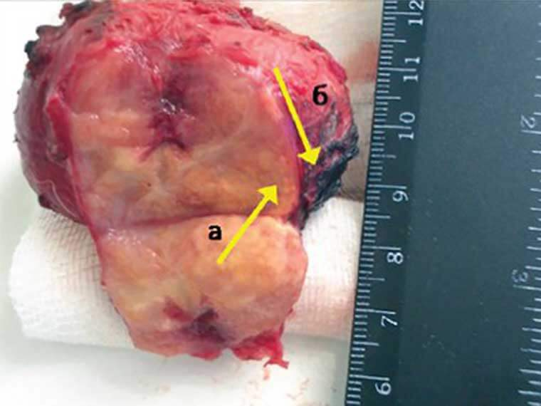
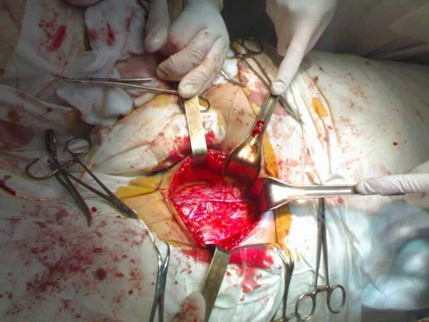
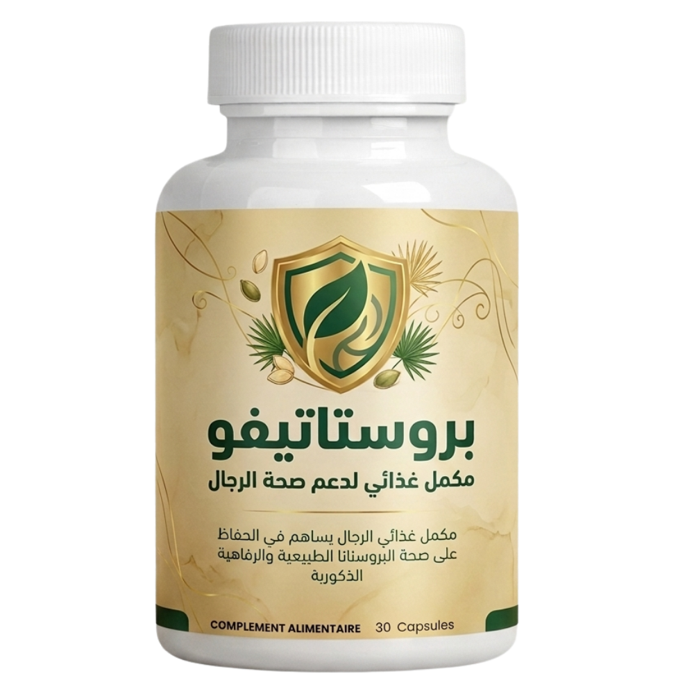
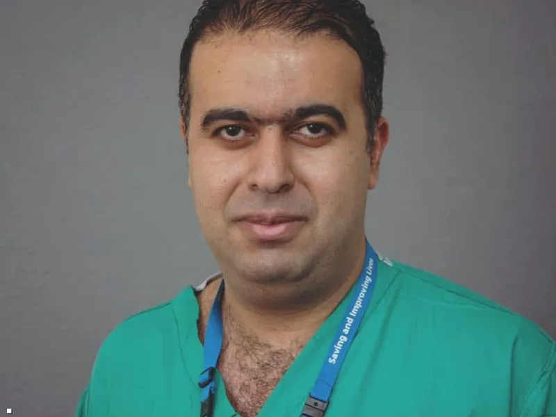

عضو المجلس العلمي وخبير المسالك البولية الشهير.
د. كنزة الفاسي
البروفيسورة كنزة الفاسي، أخصائية أمراض المسالك البولية بالدار البيضاء، باحثة قضت سنوات طويلة في علاج التهابات المسالك البولية، وسلس البول، واضطرابات السيطرة على المثانة، وسرطان البروستاتا، ولديها خبرة واسعة في هذا المجال.
لديه أكثر من 30 عاماً من الخبرة المهنية
ما هي الأسباب الرئيسية وراء تكوين البروستاتا؟
- التبول المتكرر
- صعوبة الانتصاب (ضعف الانتصاب)
- مشاكل تتعلق بالتبول
- أحاسيس غير مريحة أو آلام في منطقة الحوض وأسفل الظهر
في المرحلة الأولى، قد لا يظهر المرض عملياً أو قد لا يلاحظه الشخص، ولكن انخفاض مستوى الانتصاب ومشاكل التبول هي العلامات الأولى لبداية المرض. الجزء المهم والحاسم هنا هو عدم إضاعة الوقت. العجز الجنسي هو النتيجة الأكثر ضرراً لهذا المرض. الخطر الحقيقي هو تكوين ورم - ورم غدي بروستاتي - والذي غالباً ما يؤدي إلى سرطان البروستاتا.
لذلك، يحمل مرض التهاب البروستاتا مخاطر عديدة على الرجل. وأهمها هي:

ورم بروستاتا مستأصل (قطر 65 ملم)
يحدث العجز الجنسي في كل حالة بالتأكيد، وقد يختلف توقيت ظهوره قبل المرض أو بعده. يظهر سرطان البروستاتا في المراحل المتأخرة، ولكن هذا الاحتمال مرتفع جداً. الرجال الذين لا يتلقون العلاج أو يتعايشون مع مشاكل البروستاتا "يلعبون بالنار". إذا كنت ترغب في العيش طويلاً والحفاظ على قدرة جنسية جيدة، يجب عليك البدء في علاج البروستاتا فوراً.
المشكلة هي أن معظم المرضى لا يذهبون إلى الطبيب لطلب المساعدة. البعض يشعر بالخجل، بينما يعتقد البعض الآخر أن الأمر ليس خطيراً. ونتيجة لذلك، نواجه حالات يتجاهل فيها المرضى الوضع ببساطة. وعندما يتم طلب المساعدة، غالباً ما يكون الوقت قد فات ويكون الورم السرطاني قد ظهر بالفعل.

عملية جراحية لسرطان غدة البروستاتا
يجب أن تدرك أن البروستاتا خطر مميت يهدد صحة الرجل ويؤدي إلى الإصابة بالسرطان. وهذا يؤدي إلى وفاة المزيد من الناس. وبدون مراقبة وعلاج، يتطور المرض أحياناً بسرعة على مدار سنة أو سنتين، مما يتسبب في ظهور السرطان.
ولكن الآن، لدى الرجال فرصة فريدة للتخلص من هذا الانزعاج إلى الأبد وبدون زيارات منتظمة للمستشفيات والأطباء.
الحقيقة هي أنه في عام 2026، ظهر مكمل ثوري يستعيد وظيفة البروستاتا في أقصر وقت ممكن، ويزيل الالتهاب, بل ويعالج التهاب البروستاتا المزمن تماماً، وفي نفس الوقت يزيد بشكل كبير من القوة والمدة أثناء العلاقة الجنسية. أطلق على هذه التركيبة الطبيعية بالكامل اسم بروستاتيفو - Prostatifo. شارك علماء وأطباء من ألمانيا وفرنسا في عمليات تطوير المنتج، ولعبوا أدواراً مهمة في ابتكاره، وبرز كحل عالي الجودة وبسعر مناسب جداً لعلاج البروستاتا في الفترة الأخيرة.

اطلب بروستاتيفو - Prostatifo بخصم 50%!
يوفر بروستاتيفو تأثيراً دائماً خاصة بعد الاستخدام المنتظم لمدة 3 أشهر.
متبقي فقط 28 قطعة! اليوم:
2. غياب حالات مرضية جديدة بعد انتهاء دورة المكمل بلغت 99%.
3. بعد أسبوع واحد، تم تسجيل زيادة كبيرة في الرغبة والقوة الجنسية لدى جميع المرضى.
4. ساهم المكمل في زيادة مدة العلاقة الجنسية لدى 95% من المشاركين.
5. لم يتم العثور على آثار جانبية غير مرغوب فيها.
6. يعتبر المكمل الثوري بروستاتيفو - Prostatifo أداة رائدة في مكافحة البروستاتا.

د. إدريس التازي
نائب مدير معهد أبحاث المسالك البولية والصحة الإنجابية بالمغرب. بروفيسور في جراحة المسالك البولية.
خبرة عملية: أكثر من 45 عاماً
قبل عام 2026، لم تكن هناك منتجات فعالة والأهم من ذلك أنها بأسعار معقولة لعلاج التهاب البروستاتا في بلادنا. بروستاتيفو - Prostatifo عبارة عن مكمل ثوري يتم تناوله بمقدار جرعة واحدة 3 مرات يومياً بعد الوجبات لعلاج التهاب البروستاتا.
بالإضافة إلى ذلك، وبفضل المكونات الخاصة لـ بروستاتيفو المكونة من مزيج من بذور اليقطين ومستخلص النخيل المنشاري، فإن المنتج يزيد من قوة ومدّة العلاقة الجنسية.
مكمل بروستاتيفو - Prostatifo له تأثير شفائي استثنائي على الجهاز البولي التناسلي. ببساطة، بعد الاستخدام المنتظم لهذا المكمل الطبيعي، يبدأ جسم الرجل في العمل وكأنه في سن الـ 25.
يمكن حالياً طلب بروستاتيفو - Prostatifo فقط من الموقع الرسمي للمعهد الطبي. الهدف الأساسي لسلاسل الصيدليات هو جني المال، لذا لدينا وجهات نظر مختلفة تماماً في هذا الشأن.
اطلب بروستاتيفو - Prostatifo بخصم 50%!
يوفر بروستاتيفو تأثيراً دائماً خاصة بعد الاستخدام المنتظم لمدة 3 أشهر.
متبقي فقط 28 قطعة! اليوم: